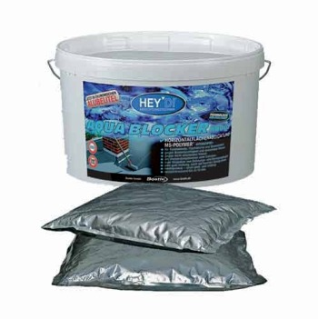

Жидкий герметик-краска

Однокомпонентный жидкий универсальный герметик с высокой адгезией для герметичного заполнения трещин и герметизации любых поверхностей Bostik Акваблокер и Акваблокер Ликвид MS.
Высокоэластичный жидкий герметик Акваблокер наносится, как краска, кистью, валиком или аппаратом безвоздушного распыления (при нанесении на значительные площади). Акваблокер применяется для долгосрочной защиты конструкций от атмосферной влаги, воды под давлением и грунтовых вод (в том числе химически активных).
Применяется дл гидроизоляции крыш и кровель, соприкасающихся с землей конструкций ниже уровня почвы (подвалов и сооружений без подвалов), фундаментов, стыков, проходов труб, швов, сопряжений.
Жидкий герметик Акваблокер благодаря выской адгезии используется для склеивания защитных, дренажных и изоляционных плит.
Жидкий герметик Акваблокер обеспечивает перекрытие трещин до 1,5 мм и перекрывает вновь образующиеся трещины до 10 мм.
Акваблокер наносится без грунтовки, может наноситься на влажную поверхность.
Нанесение жидкого герметика Акваблокер проводится в два слоя, кистью, валиком или шпателем. Стандартный практический расход составляет 2 кг/м2.
Жидкий герметик Акваблокер основан на ms-полимерах. Может контактировать с продуктами питания (после застывания) и питьевой водой. Экологичен. Может использоваться как так называемый "пищевой герметик".
После полимеризации герметик выдерживет температурный режим от -40°С до +80°С.
Акваблокер выпускается в двух модификациях: тиксотропный (густой) Акваблокер для нанесения на вертикальные поверхности и жидкий Акваблокер (для более удобного нанесения на горизонтальные поверхности, например, кровли большой площади). Акваблокер и Акваблокер Ликвид не различаются по своим рабочим характеристикам и гидроизоляционным свойствам, как и по цене.
Преимущества жидкого герметика Bostik Акваблокер:
- не содержит растворителей, не имеет запаха
- прилипает практически к любой поверхности
- не содержит силикона и изоцианата
- обладает отличной устойчивостью к УФ-излучению
- после нанесения устойчив к воздействию воды, в том числе к грунтовым водам и воде под давлением
- устойчив к атмосферному и химическому воздействию
- затвердевает под воздействием влажности воздуха
- после отвердевания становится мягкоэластичным, перекрывает вновь образующиеся трещины
Нанесение жидкого герметика
Акваблокер поставляется в готовом к применению виде и может наноситься непосредственно из
заводской упаковки. Нанесение осуществляется по всей поверхности равномерно в два слоя при помощи валика с коротким ворсом или кисти.
Жидкий герметик Акваблокер наносится в большинстве случаев без грунтовки. Например, оцинкованная листовая сталь, стекло, непластифицированный поливинилхлорид, полистирол, макролон, дерево не нуждаются в грунтовке или праймере. В случае с пористыми материалами, такими, как газобетон, рекомендуется использовать специальную грунтову Bostik 5070.
В качестве финишного покрытия поверх Акваблокера может применяться кварцевый песок различных оттенков. При необходимости герметизации значительных трещин и пробоин (например, широкие отверстия в кровле) можно наносить Акваблокер с армирующим полотном (например, специальное полотно Марисил Фабрик).
Цвет жидкого герметика и упаковка
Герметик Bostik Акваблокер и Акваблокер Ликвид MS имеет серый цвет.Допускает окрашивание (вы можете наносить краску поверх Акваблокера даже не дожидаясь его полного высыхания). Лучше производить пробное окрашивание перед окраской большой поверхности. (Это связано с различием в качестве применяемых красок).
Клей-герметик Bostik Акваблокер идет в упаковке картридж (туба) по 290мл, банка 1кг и ведро 14 кг (два пакета по 7кг).